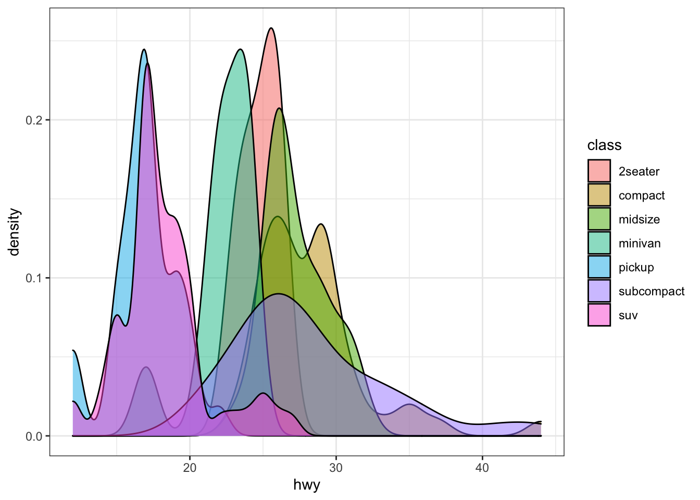

library(ggplot2)
ggplot(mpg, aes(displ, hwy, colour = class)) +
geom_point()
Most of my academic work uses R and R markdown (or more recently, Quarto) as a backbone. To summarize:
Create an R project as the hub of the project.
Track the project development using git and GitHub. Manual here.
Write a document in Quarto or Bookdown. Manual here.
If heavy analysis is needed, use Targets. Manual here.
If externally stored files are necessary, use Box.
The goal of this workflow is to allow you to work effectively in my lab, and to ensure that I and future students (including yourself!) know where things are and can rebuild them if necessary. For example, a peer reviewer may ask for changes to the analysis many months after you are gone. If you follow this workflow, the chances of me being able to productively use your work increase.
A workflow that you have probably used in the past consists of:
Keep data in a spreadsheet (Excel)
Do your analysis in the same spreadsheet
Copy a table or numbers from a spreadsheet into a document (Word)
Write about the analysis in Word
This workflow has its benefits, mainly simplicity. Excel definitely has its place. But there are lots of drawbacks.
First, spreadsheets tend to hide formulae or make them very difficult to read. For example, JP Morgan Chase bank lost almost $6 Billion when a trader believed a formula in an excel spreadsheet that he couldn’t see the error in, because the formula wasn’t shown. It would be better to have clearly written methods and analysis, than to just show the numbers that go in that analysis.
Second, this method can rely on lots of manual tasks: push this button, copy this figure, update this number. Doing it once is easy, but what if I ask you to go back and change something? Will you remember every table that depends on that calculation? Or what if you leave and another student has to figure out what you did? It would be better to have a reproducible document that re-builds itself whenever the analysis changes.
This is the problem that R and R markdown solves. For example, I can embed R code into this document. I can load a library, read a dataset, and create a figure all at once.
library(ggplot2)
ggplot(mpg, aes(displ, hwy, colour = class)) +
geom_point()
And if I tell you that I’d rather see a different figure, you can just change the code and it will print something different
ggplot(mpg, aes(hwy, fill = class)) +
geom_density(alpha = 0.5) + theme_bw()
So, how do you make this happen?
The basis of every project — a paper, thesis, or report — should be an R project. An R project is a folder associated with an .Rproj file that can be created and opened in R Studio. For an introduction to installing R and Rstudio, there is a tutorial at DataCamp.
The R project folder should be organized into these subfolders as follows:
<project>/
- README.md
- <project.Rproj>
- data/
- R/
- py/
- ....README.md is a markdown file that describes what the project is about. What is the central question, who is the project sponsor, and what other data resources might need to be referenced in the project.
data/ is the folder where you place all of your input or intermediate data. There may be subfolders in this folder. Preference is for plain text (csv or json) data over data stored in spreadsheets or binary formats. If you get data from the internet, it might be better to write code to download the data instead of storing the downloaded data. That would be more reproducible.
R/ is a folder where you write your R scripts. Each script should be clearly named, e.g., data_cleaning.R .
py/ is a folder where you write your python scripts. Each script should be clearly named, e.g., data_cleaning.py .
When you type a path in a script, it should reference its location relative to the folder root. So a script in R/clean_data.R might look like this:
# read data from folder
data <- read_csv("data/my_data.csv")This lets other people who work on your project use it without changing all the paths to the all the files that you use. Or as Jenny Bryan put it,
If the first line of your #rstats script is
setwd("C:\Users\jenny\path\that\only\I\have"), I will come into your lab and SET YOUR COMPUTER ON FIRE.
Other folders might be useful, but should be carefully named and organized.1 Additionally, it might be a good idea to put README file in some of the sub-folders if the information in them might need more explanation.
The LinkedIn Learning Course R: Essential Training: Wrangling and Visualizing Data shows how to implement this folder structure and an R Studio project
For an introduction to installing R and R Studio, there is a tutorial at DataCamp. Follow along with the tutorial if you are new to R and R Studio.
If you are curious about projects, there is a helpful R Studio resource page with instructions on how they work.
Your project directory should be a git repository that is posted to GitHub.
Git is software that tracks changes to plain text documents line-by-line, over time. It also provides robust methods for merging conflicting documents written by different users. No longer will you need to have a folder that contains the following:
my_document.docx
my_document edits from advisor.docx
my_document final.docx
my_documentREALLYFINAL.docx
my_documentREALLYFINAL_edits from advisor.docxWhen used correctly with good commit messages, git can serve as an excellent lab notebook for the project. Some basic rules for working with git:
Commit regularly Keep your working directory clean! Don’t let dozens of different changes pile up between commits
Write good messages A good commit message will help you and me trace what is going on, and see what matters. A primer on writing good messages is here; learn this and do it consistently!
Ignore files correctly If it is a file that you actually worked on, then it should be committed and tracked. But if you don’t know what it is, then there’s a good chance that it was created as a byproduct and should be ignored. You don’t want hundreds of files clogging up your git commit list. Also, any project data that is not supposed to be distributed must be ignored.
GitHub is a web service that hosts git repositories, allowing git users to share code with each other and back it up on the internet. You are welcome to create private repositories for your own use and exploration, but work done for the lab should be in the BYU-Transpolab organization. Repositories can be public if possible or private if necessary; speak to me about what your project requires.
The LinkedIn Learning Course Learning Git and Github provides a clear tutorial with installation instructions and basic commands.
Jenny Bryan has an excellent book / course on using Git and GitHub with R, called Happy Git and GitHub for the userR. Follow these instructions.
There are some kinds of documents that do not lend themselves very naturally to Git/ GitHub. Word documents and power point presentations — for example — cannot be tracked line-by-line with Git. GitHub also has a 50 MB soft file size limit (and a 100 MB hard limit).
BYU has given you free access to unlimited space on Box. I may create a folder that you use for a project, or you might create a folder and invite me to it. Folders should be organized with the same data/ README, etc. file structure as described in R Projects.
If your project uses large data that cannot be stored in Git, I recommend including a script that will download a file from Box directly into your local data/ folder.
R Markdown and Quarto are technologies for embedding analysis code inside of documents. Many examples of my work are available written in R Markdown or Quarto. This includes things like the textbook for CE 361 and a number of my academic papers. One set of source documents can be used to create a website, a word document, and a journal-formatted PDF file.
A newer technology called Quarto is somewhat easier to work with, and can process code written in R, python, or any number of other languages. There is a comprehensive authoring guide to Quarto; read this guide and refer to it.
I have written a template GitHub repository that generates a bookdown website and Elsevier journal article.
Using the byu-thesis quarto extention, you can set up a template to make your BYU Engineering thesis in quarto.
A linkedin Learning Course, Creating Reports and Presentations with R Markdown and RStudio will help you learn these techniques.
One reason to script your work instead of use button-pushing software is so you can repeat it. But while you are working, it sometimes becomes difficult to remember which sections of your code you have to re-run when you update something. It also might take a long time to re-run your analysis if you have costly steps.
For small projects where all the calculations can occur on render, it makes sense to just have all the code embedded in the document. Many times, however, you will have heavy calculations that you don’t want to run every time you typeset your document. The targets package allows you to build a pipeline that runs your work in order and keeps track of what has been run and what has not been run. The core of targets is a _targets.R R script that looks something like this:
# _targets.R file
library(targets)
source("R/functions.R")
tar_option_set(packages = c("readr", "dplyr", "ggplot2"))
list(
# Start with data --------
# format = "file" means that every time data.csv changes, pipeline will run
# again
tar_target(file, "data.csv", format = "file"),
# Read data into workspace
tar_target(data, get_data(file)),
# fit model based on data
tar_target(model, fit_model(data)),
# make a plot based on the model
tar_target(plot, plot_model(model, data))
)In the R/functions.R file, there will be functions called get_data , fit_model, and plot_model that tell R what to do. When you run tar_make() in your R project, it will run all four steps. But if you change fit_model() and run tar_make() again, targets knows to skip the file and data because those have not changed.
Targets works by storing intermediate objects in a folder called _targets/. You should ignore this file from your GitHub repository.
Targets is a great way to link large files stored on Box and an R project. Say that data.csv from the example above is too large to commit to GitHub. We could change the target to be
# Start with data --------
# format = "file" means that every time data.csv changes, pipeline will run
# again
tar_target(file, fetch_file("data.csv"), format = "file")And then write a function that downloads the appropriate file from Box,
#' Get data file from Box
#'
#' @param file Path to file
#'
fetch_file <- function(file){
# check if file is already here for some reason
if(!file.exists(file)){
# get the location for the direct download from box.
download.file("https://byu.box.com/shared/static/<code>.csv", file)
} else {
message("File already exists")
}
# targets has to return something, in this case the path to the file
return(file)
}The Box code must be the link for the direct download. Please see the Box manual for instructions on creating and using this link.
Note that you should not use the above method for data objects that must be protected. Instead, you could prompt the user to go to a URL and then they could download the file themselves if they had access to the box folder. Not automatically reproducible with one click, but it prompts people to go to the right place. The function below shows how to do this.
#' Get streetlight data
#'
#' @param path Path to folder containing streetlight data files
#' @param landuse One of "libraries", "parks" or "groceries" indicating which
#' land use streetlight file to download
#'
#' @details We are unable to distribute the streetlight data files. This
#' function prompts the user to navigate to the folder on box, download
#' the file, and save it in the proper place before moving forward.
#'
#'
get_sl_data <- function(path, landuse){
urls <- list(
"libraries" = "https://byu.box.com/s/<code>",
"parks" = "https://byu.box.com/s/<code>",
"groceries" = "https://byu.box.com/s/<code>"
)
files <- list(
"libraries" = "160756_Libraries_home_block_groups_all.csv",
"parks" = "streetlight_parks.zip",
"groceries" = "256055_Grocery_Stores_Utah_County_2019_home_block_groups_all.csv"
)
if(!file.exists(path)){
message(str_c(
"You need to download a file on Box.\n",
"1. Go to ", urls[[landuse]], "\n",
"2. Log in to Box, and download the file.\n",
"3. Copy the file to ", path, "\n",
"4. Run tar_make() again."))
stop(path, " not Found")
} else {
message(path, " available")
}
return(path) # to use file target, need to return path to data.
}